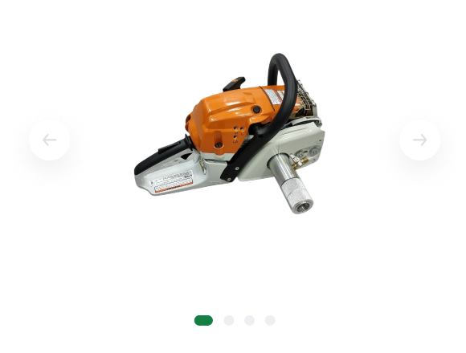

Профессиональное геологическое оборудование
Переносной мотобур для отбора ориентированных образцов ПМБ-2б
Ручной мотобур ПМБ-2б предназначен для отбора геологических, геофизических, геохимических и прочих проб, в частности для отбора ориентированных палеомагнитных кернов стандартного диаметра.
Бензиновый двигатель 50 см3
Вес ~5 кг
Габариты 28 × 44 × 34 см.
Система охлаждения водяная.